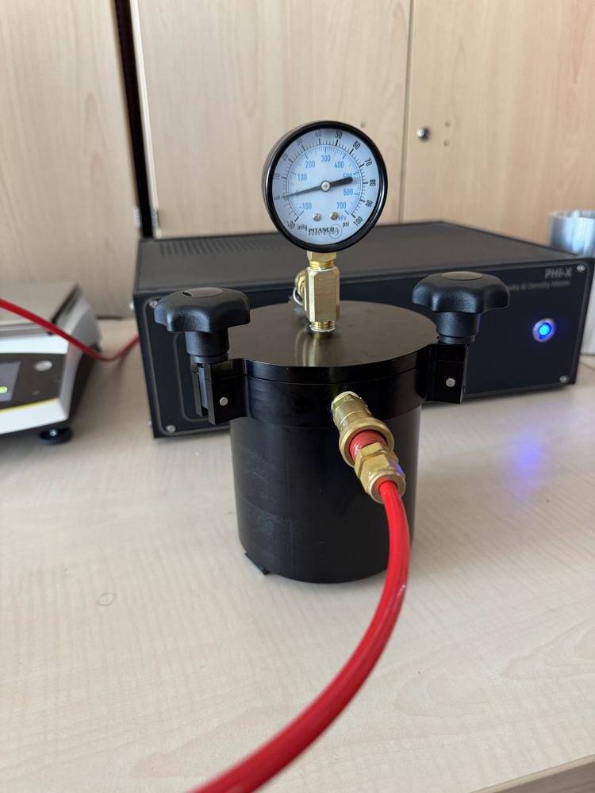
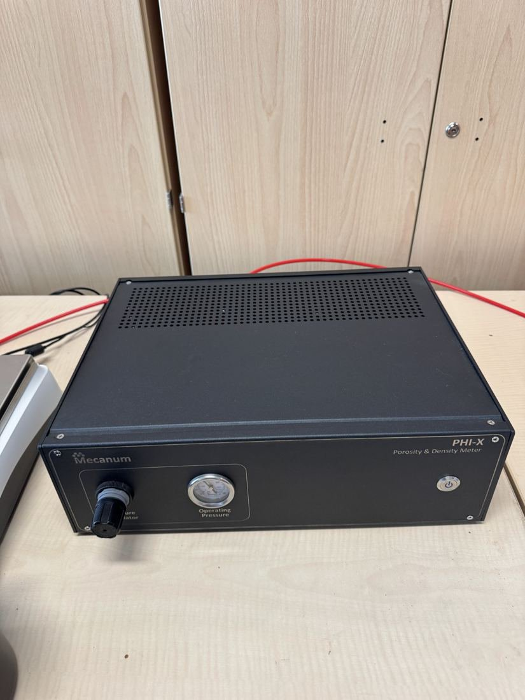
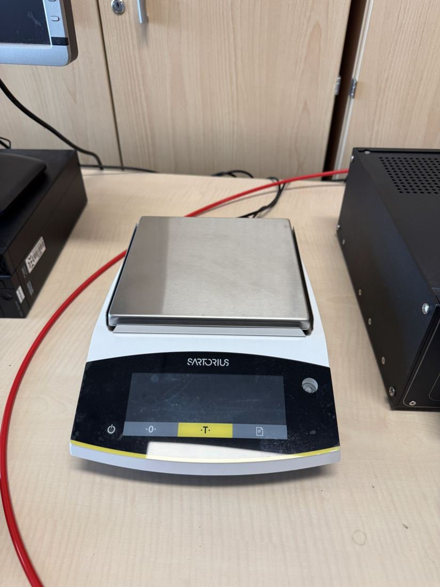
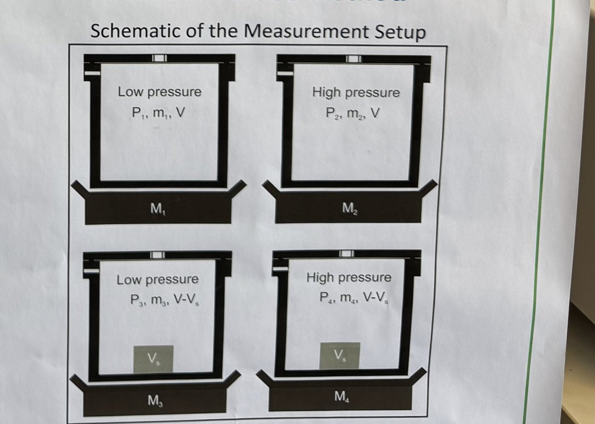
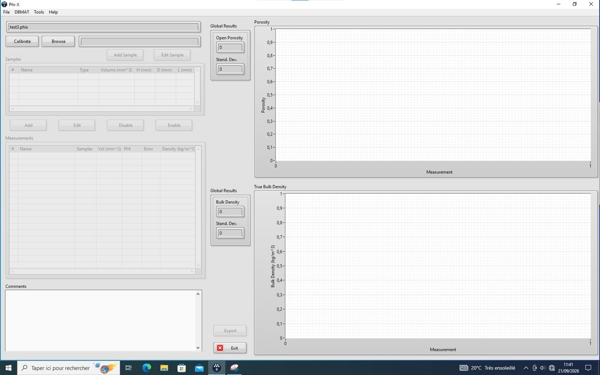

Test bench · MSME laboratory (UMR 8208 CNRS), Université Gustave Eiffel · 2026
Open Porosity and Bulk Density Bench
Pressure/mass methodPHI-XPrecision balanceCertified check sample

Summary
The bench measures the open porosity φ — the fraction of the volume made of pores the gas can reach — and the bulk density of a porous sample. It uses the pressure/mass method of Salissou and Panneton: a sealed chamber is weighed filled with gas at two pressures, empty then with the sample; the difference gives the volume of the solid phase.
I wrote the 24-page lab notebook (version 1.1): theory, the PHI-X porosimeter, the precision balance and its 2 kg standard mass, the certified check sample, safety under pressure, the procedure and the use of the results in RoKCell.
On the bench
Everything rests on mass differences of a few grams, so the notebook lists every error source and its cure: balance calibrated with a 2 kg Troemner standard handled with gloves, thermal equilibrium before weighing (the method assumes an isothermal process), leak checks, sample dimensions measured with calipers, the right gas declared in the software (air from the compressor, while the Mecanum certificate was established with argon), and a check on the certified reference cylinder before measuring.
Method & equations
Definitions (\(V_t\): total volume, \(V_s\): volume of the solid phase and closed pores):
$$\phi=\frac{V_t-V_s}{V_t}=1-\frac{V_s}{V_t},\qquad \rho=\frac{m_{\text{sample}}}{V_t}$$Pressure/mass method: masses \(M_1\dots M_4\) and pressures \(P_1\dots P_4\) of the four states (empty and with sample, two pressures each), gas constant \(R\) (287 J/(kg·K) for air, 208 for argon), temperature \(T\), chamber volume \(V\):
$$\phi=1-\frac{R\,T}{V_t}\left(\frac{M_2-M_1}{P_2-P_1}-\frac{M_4-M_3}{P_4-P_3}\right),\qquad \rho=\frac{M_3-M_1}{V_t}+\frac{(P_1-P_3)\,V+P_3V_s}{R\,T\,V_t}$$Figures








